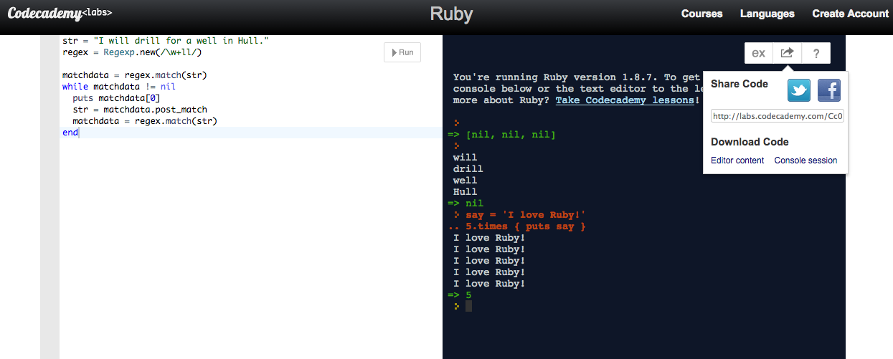
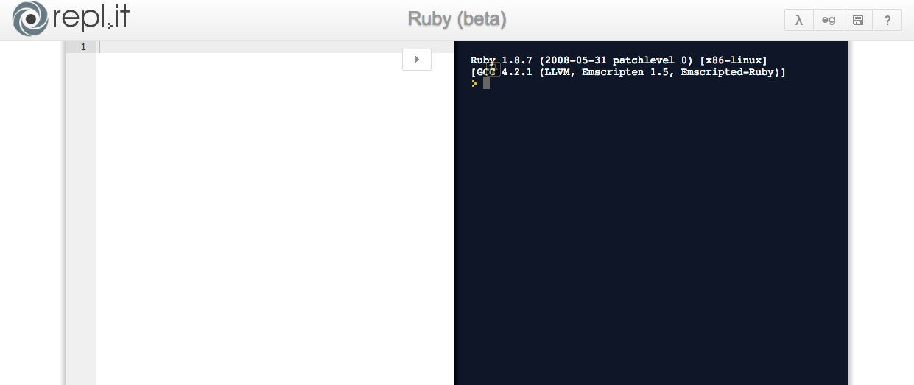
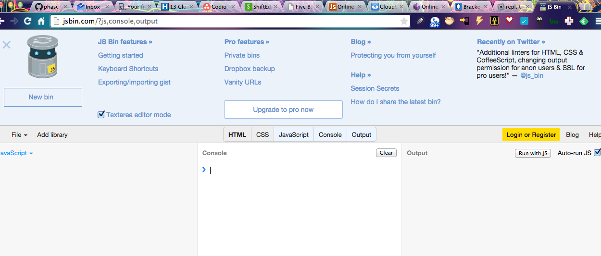
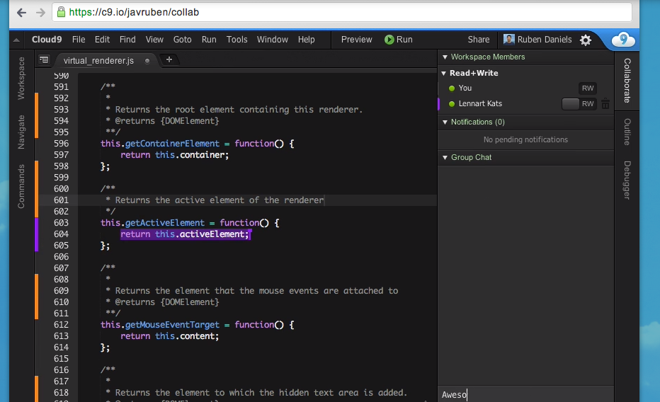

RUBY:
PROs- its pretty, and simple, it's also built into a site that helps you learn ruby, so if you are struggling, you can always use the lessons!
CONS- it's not built to let you edit your code AND run it, so you'll have problems using this for large sets of code.
PROS- this is an editor, console space with examples for you to use and a simple clean workspace to try out your code.
CONS - this site uses an old version of RUBY docs, so some of your code might not work.

PROS- very much built like the Codeacademy Labs, this space lets you run code on lots of languages, not just ruby! you can save the copy of all your code in the editor and console history for your record.
CONS- in the same vein as the codeacademy labs, this is running an old version of RUBY.

JS:
PROs- This space is very commonly used to show code in StackOverflow, and has nice collab features, as well as tidy-up and JSHint, which will help you have clean and working code. Its a great place to test out JS code that works with HTML and CSS code.
CONS: it does not have a console window so you wont be able to see anything that prints to console.log.

PROs- in addition to HTML, CSS and JS window there is a console window to see everything going on in your code.
CONs- there's no line count, so the errors will not be easy to find. the share function doesnt really help you collaborate on your code.

HTML & CSS
DOM console in browser
PROS- immediate view of what's going on with your code, and there is auto complete that helps you figure out what your options are.
CONS- you're building within your browser, and once you refresh, your changes are gone, don't forget to save your changes to your file!

PROS - collaborative features
CONS - freemium site, very heavily-featured site might be too much for starters.
